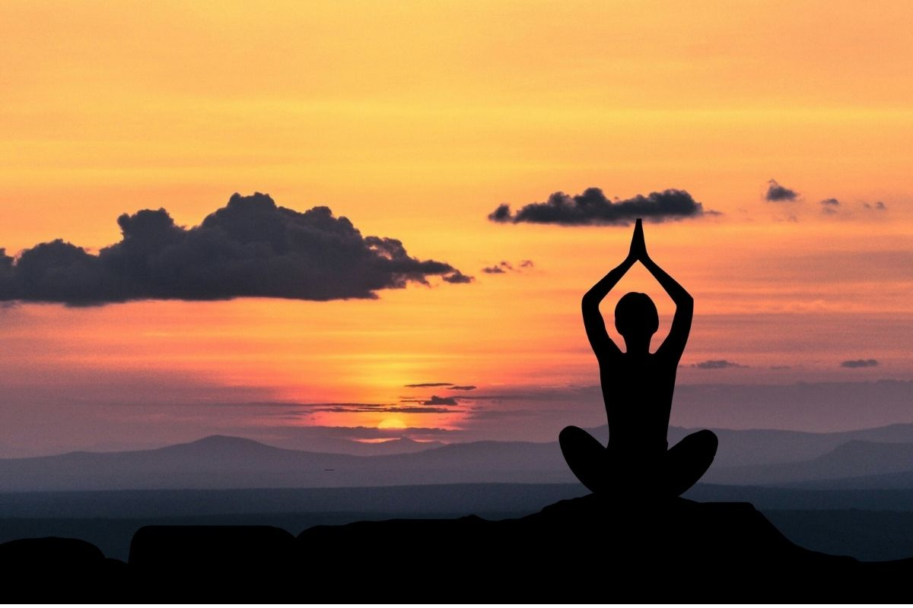
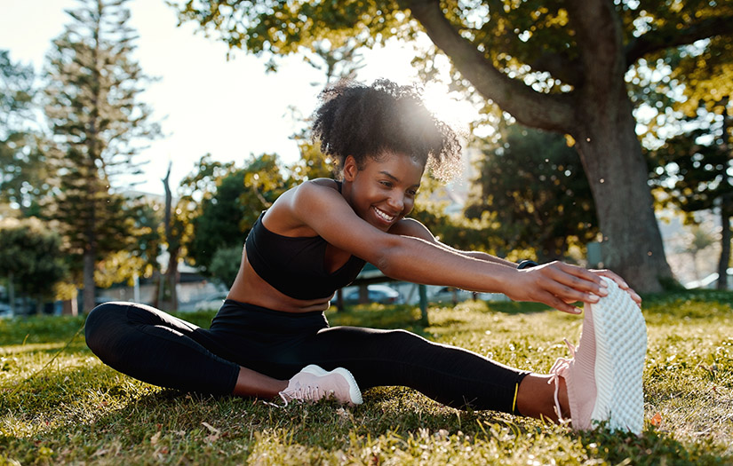
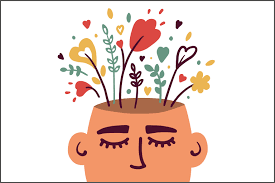
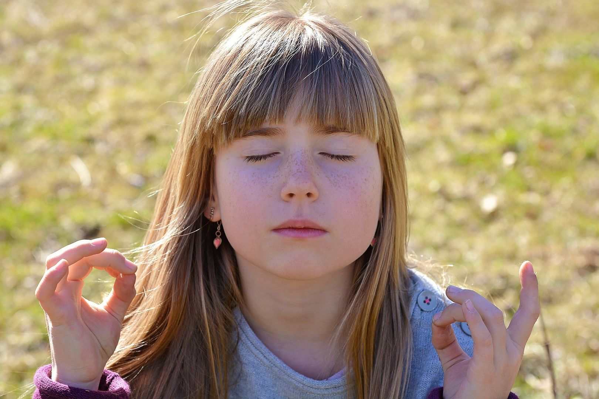
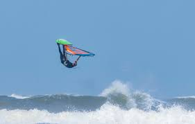

Bij UCLL vinden we het belangrijk dat studenten regelmatig pauze nemen en zich kunnen ontspannen. Hieronder vind je verschillende ontspanningsoefeningen die je tijdens je pauzes kunt doen om je concentratie en welzijn te verbeteren.

Ademhalingsoefening
Een eenvoudige maar effectieve techniek om stress te verminderen en je te helpen focussen. Adem 4 seconden in, houd 4 seconden vast, adem 4 seconden uit en wacht 4 seconden voor je opnieuw inademt.

Korte meditatie
Een 5-minuten geleide meditatie om je geest tot rust te brengen. Focus op het huidige moment en laat afleidende gedachten los. Perfect voor een korte pauze tussen colleges.

Stretching
Een reeks eenvoudige stretchoefeningen die je achter je bureau kunt doen. Ontspan je spieren, verminder spanning en verbeter je bloedcirculatie in slechts enkele minuten.

Mindfulness oefening
Een korte mindfulness oefening die je helpt om volledig aanwezig te zijn in het moment. Richt je aandacht op je zintuigen en neem waar wat er om je heen gebeurt zonder te oordelen.

Oogontspanning
Verminder vermoeidheid en spanning in je ogen door deze eenvoudige oefeningen. Ideaal als je lang achter een scherm hebt gezeten en last hebt van vermoeide ogen.

Rustgevende visualisatie
Sluit je ogen en laat je meenemen naar een rustige, ontspannende omgeving. Deze oefening helpt om stress te verminderen en je geest te kalmeren voordat je weer aan het werk gaat.